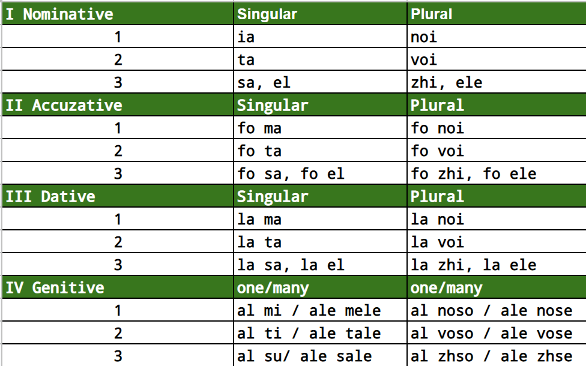

< class="container">
Maj Pronoun
Maj pronouns are versatile and easy to use. Maj is using 3 persons like all Romance languages. All pronouns are genderlesss. Maj is using different words for a female and male to compensate for lack of gender. When we reffer to abstract things there is a special particle that take the pronoun role.

Regular Pronouns
Note:First, we need some new words for examples, then we learn the pronouns.
Dictionary:
- noma = name
- kasa = house
- baka = boat
- bezu = own
- geku = belong
- kemu = to call
- kibu = write
- sonu = to be
- digu = say
- venu = to come
- xaru = to have
- emv = some
- posu = be able/can
- xai = let's
- vi = how
- uk = which
Case I: Nominative
| Person |
Singular |
Plural |
| 1 |
ia |
noi |
| 2 |
ta |
voi |
| 3 |
sa |
dhi |
Demonstrative
The word “lo” in Maj serves as a demonstrative pronoun, similar to "it" or “this” or “that” in English. It points to a specific thing or idea being discussed. Here are a few examples of how “lo” is used in Maj:
- lo vedu: I see it.
- lo auzi: I hear it.
- lo stiu: I know it.
- la dau lo lui: I give it to him/her.
Examples:
- ia sonu Elucian = I'm Elucian
- ta sonu em una = you are someone
- sa sopu em koza = he say something
- ia bezu una baka = I own a boat
- sa xaru una kasa = he has a house
- la sonu una bela = it is a beauty
Case II: Accuzative
The acuzative is made using "fo", a logical particle that indicate for who or for what.
- eta baka sonu fo ma = this boat is for me
- esa kasa sonu fo noi = that house is for us
- noi xaru una kasa et una baka = we have a house and a boat
- el sonu moka fo totsi = there is food for everyone
Dictionary:
- vedu = to see
- fime = movies
- macu = to walk
- paju = to like
- ciana = dog
- dola = pain
- teta = head
- skuzo = excused
- ogi = each or every
- jora = day
- gabu = hurry
- voku = call
- noge = legs
- mosu = move
- pe = on
- sh = to
Case V: Reflexive
For reflexive we have two forms: nominative, acuzative. Observe that nominative form is not using two words but instead only one. This is how Maj enable efficient chat. By removing redundant pronouns.
a) Reflexive - Nominative
- ymi paju sh vhzu fime = I like to watch movies
- yts paju sh macu = you like to walk
- yci macu su Koika = he is walking his dog
a) Reflexive - Accuzative
- pe mi mh dolu la kapa = I have a headache
- pe ti te jozu = you are excused
- ia yl vhzu ogi jora = I see him every day
Case VI: Subjonctive
- vi posu sh te voku? = how can I call you?
- ta posu sh mh voku Elutcian! = you can call me Elucheean!
Case VII: Imperative
- voku-mh Elutcian? = call me Elucheean ?
- xai gabu-te = come on hurry up!
- xai mosu-vh zus noge = come on everybody move your legs!
Read next:
Preposition